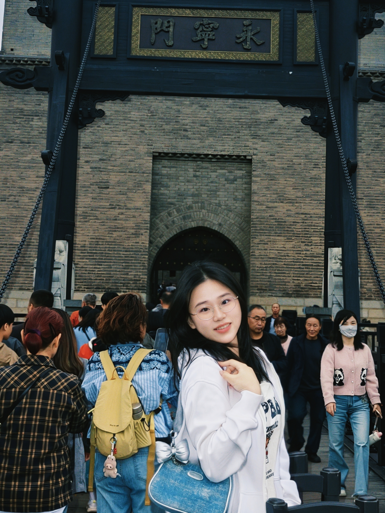
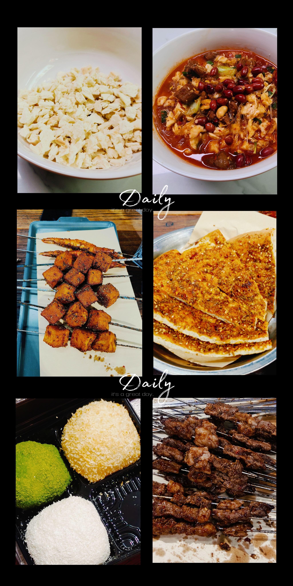
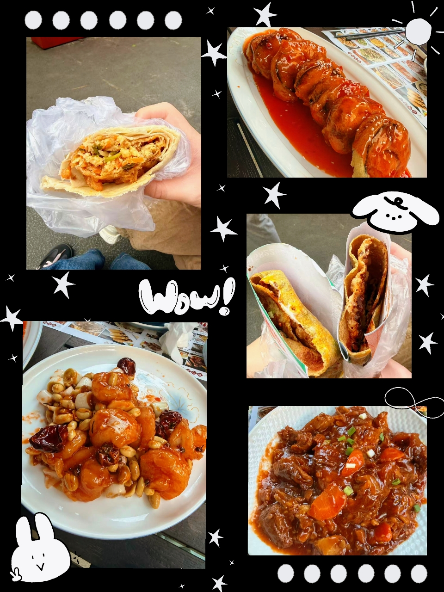
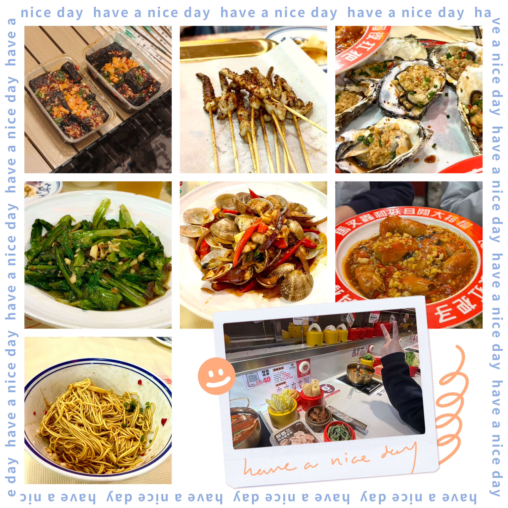

欢迎来到蔡恩琪的个人小天地，慢慢逛～
蔡恩琪
日新书院 · 哲学系 ✨

2007.02.20，19岁
福建·福州
日新书院 哲学
13615937948
infj（i人浓度高，实际喜欢交朋友但是比较慢热……）
水象星座，比较感性，共情力强，低能量宅人，宿舍重度依赖者~
喜欢吃吃喝喝，美食爱好者
网络文学鉴赏者
做手工（ps：但是遗憾的是自己略微手残 <(。_。)>）
目前在积极发掘新的爱好，不介意带新手入坑的可以找我 ੭ ᐕ)੭*⁾⁾~


